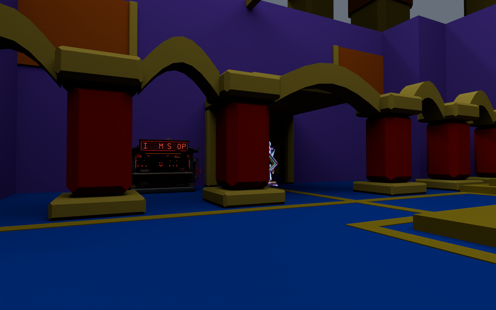
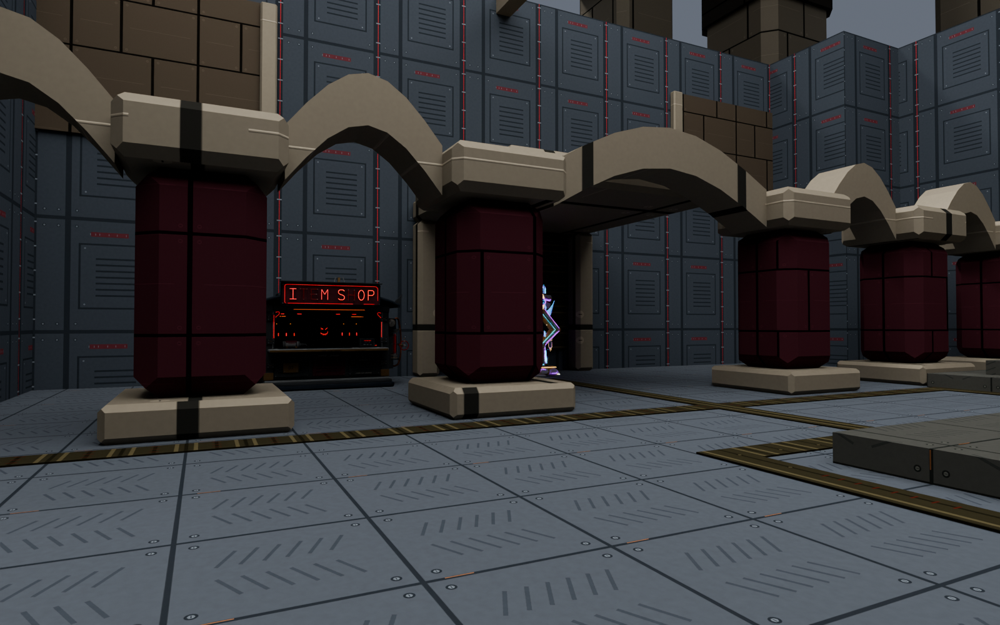
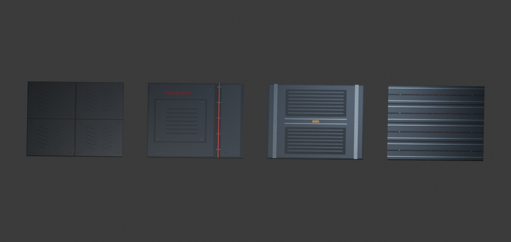

TOWER OF DOOM II · COMPLETE CROWN · SEPTEMBER 25, 2026
The crown, before and after
New: physical red crown alarms and textured Doppelgast legs
New enemy art: red-eyed charcoal zombies and robotic Doppelgast
The entire crown island now shares the detailed material style: dark metal, aged brass, subdued glass, tread plates and service panels. The exterior, underside, hall, balcony, approach and overlook are covered.
Matched Blender views: identical geometry, cameras, lighting and exposure. The before side reconstructs the materials immediately preceding this refactor, including your blackout changes. These are material previews, not in-game screenshots. Click either image to see it full size.
The crown hall and detailed native props
BEFORE · Previous materialsPre-refactor blackout version
AFTER · Detailed material kitAuthored panels, tread, seams and surface detail
Open this side-by-side as one image
The crown material refactor passed its full build and deployment checks on September 25 at 11:20. This page compares Blender previews; native appearance is judged in game.
Complete coverage
803 structural pieces and 8,634 world faces now use the authored kit, along with the crown gate. The audit checks for old materials on the exterior shell, arches, points, jewels, low-hanging ornaments, underside, interior walls and floors, balcony, passage and overlook. It found none left.
Larger exterior panels reduce the toy-like repeated-block appearance. Player-height surfaces retain finer tread, fasteners, vents, seams and wear. The original collision and routes remain intact. The crown stays open above.
The interior belongs to the same kitThe existing shop, teleporter and altar keep their designs and placements. Stock perk machines, the lever, ammo crate and runtime effects remain in the game; they are omitted from this architecture preview.
Reusable Blender materialsSix modeled tile sources, thirty baked texture maps and twenty native color/finish roles. Eighteen roles cover the crown. The ceiling source is retained for later enclosed spaces.
Device finishes
The teleporter and altar previews previously used finish settings that did not reproduce their native materials. Both now use a shared, explicitly approximate preview driven by the exported maps and native gloss range.
| Finish | Previous gloss ceiling | Current candidate |
|---|
| Accepted shop | 8 | 8, unchanged |
| Teleporter ready/off | 13 | 8 |
| Heavenly Altar | 6 | 5, retaining metal highlights |
The pink ready, yellow recharge and dark off states remain. World surfaces have no permanent emission, respecting the blackout and power reveal. The native visual result still needs your playtest: view the crown from the tower after jumping across, then inspect its hall and device finishes under powered lighting.
Material audit and implementation · Complete surface coverage · Comparison sources and cameras · Native build evidence